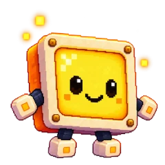
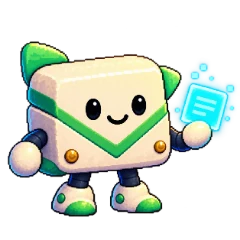
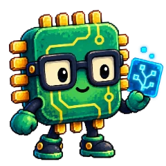
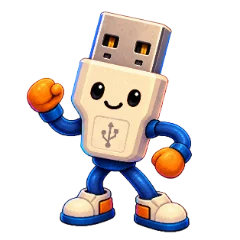

TAJNÝ SVET PIXELKOV
Za obrazovkou
Keď sa ľudský dom začne ukladať na spánok, najskôr v ňom stíchnu veľké veci. V kuchyni prestane cinkať riad. Za oknom pomaly ubúda áut. Na operadle kresla zostane prehodená deka a na stole hrnček, z ktorého už nevystupuje para. Potom niekto vypne televízor. A práve vtedy sa za jeho tmavým sklom rozhostí najkrajší večer.
Ľudia ho nevidia. Obrazovka je pre nich iba obrazovkou a na jej čiernom povrchu sa odráža lampa. Pixelkovia však žijú na jej druhej strane: medzi svetelnými bodkami, tenučkými spojmi a miestami, v ktorých sa uchovávajú obrazy a zvuky. Jedni majú svoj kútik v televízore, druhí v tablete, ďalší v počítači. Nikto z ľudí presne nevie, ako ich domovy vyzerajú. Sú také maličké, že aj to najdrobnejšie svetielko je pre nich veľké ako okno.
V ten večer sa Piko zastavil pri poslednom svietiacom spoji. Mal modrú hlavu podobnú obláčiku, malú svietiacu tvár a trochu nakrivo uviazanú tyrkysovú kravatu. Jeho zápisník bol na dnešný deň už zatvorený. Pozoroval drobné svetlá, ktoré sa postupne upokojovali po celej obrazovke. Pri každom mal niekto svoj obľúbený kútik. Piko ich dobre poznal. Vedel, kadiaľ sa k nim ide, aj to, kto ho v nich čaká.
O bodke, ktorá nechcela byť sama
Nebolo to tak odjakživa. Za dávnych čias, keď ešte svetelné cesty nemali mená, ležalo za obrazovkami iba veľké ticho. Raz doň prenikol obraz ranného slnka. Rozsvietil maličkú zlatú bodku a v nej zostalo čosi z jeho tepla aj potom, keď sa obraz zmenil.
Tá bodka sa podľa najstaršej povesti stala prvým Pixelkom. Najskôr vedela iba svietiť. Potom sa naučila urobiť krôčik a neskôr ešte jeden. Keď v diaľke zazrela slabý záblesk, vydala sa k nemu. Cesta trvala dlho, lebo bola malá a svet okolo nej nemal konca. Ale keď konečne dorazila, zistila, že záblesk patrí niekomu, kto je rovnako prekvapený a rovnako rád, že už nie je sám.
Postupne ich pribúdalo. Niektorí sa narodili z farieb, iní z tichých zvukov, ďalší z drobných spojení, po ktorých putovali správy. Preto sa dodnes na seba celkom nepodobajú. Jeden pripomína mikrofón, iný obálku alebo zelený mikročip. Všetci si však z tých dávnych čias uchovali zvláštny zvyk: keď v diaľke uvidia osamelé svetielko, všimnú si ho.
Spočiatku zostávali pri sebe, blízko tej istej svetelnej bodky. Neskôr objavili ďalšie miesta vo vnútri zariadení. Naučili sa putovať po drobných spojoch a posielať si cez ne odkazy. Každý si našiel kútik, v ktorom mu bolo dobre, no cesty medzi sebou si nechávali otvorené. Tak sa ich svet rozrastal spolu s ľudskými domácnosťami, od jednej obrazovky k druhej.


Medzi svetelnými bodkami
Piko sa vydal domov. Pod topánkami sa mu ešte mihali posledné farby z filmu, ktorý ľudia práve dopozerali. Chvíľu modrá, potom mäkká zlatá. Obrazy z ľudského sveta prechádzali nad Pixelkami celý deň, ale teraz sa už nikam neponáhľali. V tichu bolo počuť iba jemné bzučanie zariadenia.
Pri rade drobných svetielok našiel Pixi. Žltý štvorcový Pixelko postupne stlmoval tie, ktoré už dnes nebolo treba. Jedno nechala svietiť pri odbočke, aby Piko dobre videl na cestu. Mala rada farby ľudských obrázkov, ale najradšej zo všetkého mala tento večerný jas: taký slabý, že nikoho nerušil, a predsa dosť silný, aby pri ňom kamarát nemusel tápať.
O kúsok ďalej sedel Pingy. Jeho svetlé telíčko pripomínalo obálku a zelená čiapka sa mu trochu zosunula nabok. Triedil posledné odkazy. Tie, ktoré už doručil, ukladal k sebe. Tie, ktoré mohli počkať, nechal na ráno. Vo svojom malom úložisku mal miesto pre každú správu a dnes už vedel, že nie každá sa musí ponáhľať.
Miky si práve odkladal slúchadlá. Mal okrúhlu mriežku ako mikrofón a celý deň zachytával zvuky z ľudského bytu: hudbu, hovory, vzdialené zavolanie i tiché prosby o pomoc. Teraz iba načúval, či už všetky správy dorazili. Keď zbadal Pika, spokojne sa usmial. O chvíľu sa mali všetci stretnúť vo svojom spoločnom kútiku.


Malé každodennosti
Každý Pixelko si svoj domov zariadil trochu inak. Pixi mala rada miesto pri žltých svetelných bodkách. Miky odpočíval tam, kde sa zvuky ukladali do ticha. Pingy si vybral kútik pri prichádzajúcich správach, aby vedel, komu ktorý odkaz patrí. Ich príbytky by sa na ľudskú dlaň zmestili mnohokrát. Pre nich však mali presne tú správnu veľkosť.
Pri ďalšom spoji dokončoval prácu Plugy. Bol to svetlý USB konektor so šikovnými rukami a pevnými topánkami. Starostlivo skontroloval miesto, ktorým cez deň prechádzali odkazy. Nič do seba netlačil nasilu. Ak spoj nesedel, otočil ho, prezrel a pokojne skúsil znova. Aj preto sa na jeho spojenia mohli ostatní tak dobre spoľahnúť.
Čipko už čakal vedľa neho. Zelený mikročip so zlatými kontaktmi si niesol zvinutý plán. Cez deň doň zakresľoval cestičky medzi malými súčiastkami, po ktorých sa dalo bezpečne dostať na druhý koniec zariadenia. Teraz ho previazal mäkkou stužkou. Poslednú čiaru mohol dokresliť zajtra. Keď Piko prišiel bližšie, obaja sa pridali k nemu.
Pixelkovia mali svoje malé zvyky. Pred odpočinkom si upratali pracovné miesto, odložili nápady na ráno a pripravili niečo dobré pre kamarátov. Najradšej mali zlaté štvorčeky zo svetelných omrviniek. Zbierali ich na okrajoch obrazov, kde by si ich žiadny človek ani nevšimol. Na spoločné stretnutie ich stačilo celkom málo. Dôležitejšie bolo, aby zostalo miesto pre každého.
Keď sa vzdialená cesta stíši
Pri odbočke k vzdialenému zariadeniu sa pred nimi natiahla tenučká svetelná cesta. Viedla až k tabletu v inej ľudskej izbe. Dnes už jej druhý koniec sotva žiaril. Kdesi za stenou veľkého sveta sa práve zamkla obrazovka a prúd nových správ ustal.
Také chvíle Pixelkovia dobre poznali. Ľudia vypínali počítače, odkladali telefóny a niekedy pri upratovaní vytiahli zariadenie zo zásuvky. Nebolo to nič zlé. V ľudskom byte sa jednoducho skončila práca alebo sa začínal večer. Za obrazovkami sa vtedy niektoré cesty na čas uzavreli. Odkaz, ktorý nestihol prejsť, zostal odpočívať v malej poštovej zastávke.
Občas sa spojenie prerušilo celkom nečakane. V správe sa pomiešali kúsky alebo uprostred mosta prestal svietiť chodník. Vtedy mal každý niečo, čím vedel pomôcť. Miky vylovil správny tón zo šumu, Pingy usporiadal lístky a Čipko s Plugym našli pevné spojenie. Pixi pri práci držala svetlo a Piko dohliadal, aby sa nikto nestratil.
Niekedy im pomohli aj ľudia. Dospelý si všimol, že sa pripojenie prerušilo, a obnovil ho. Detské ruky poskladali roztratený odkaz, ktorý sa zvláštnou náhodou ocitol na papieri. Na malom svete sa vtedy znovu rozžiarila cesta. Ale dnes už nebolo treba nič opravovať. Plugy pri rázcestí iba otočil večernú značku a všetci traja pokračovali smerom k domovu.
Svetielko pri návratovej bráne
Pred spoločným odpočinkom ešte odbočili k Guardymu. Stál pri návratovej bráne, ktorou sa dalo bezpečne prejsť z jedného zariadenia do druhého. Okraj jeho oranžového štítu zachytával posledné svetlo a pod tyrkysovou kravatou mu pokojne žiarila malá kľúčová dierka.
Guardy poznal bezpečné spojenia aj znamenia tých, čo sa vracali domov. Staral sa o Ochranné pole, ktoré prepúšťalo overené odkazy a zastavilo tie podozrivé. Pixelkovia ho vnímali ako jemnú žiaru pri dôležitých priechodoch. Ak sa odniekiaľ ozval neznámy signál, Guardy ho najskôr preskúmal. Kým si nebol istý, nikam sa neponáhľal.
Jeho večernou prácou bolo čakanie. Vedel, že posledný kamarát niekedy prichádza pomalšie než ostatní. Preto pri bráne nechával svietiť malé svetielko. V ten večer sa k nemu postupne pridali aj Miky, Pixi a Pingy. Všetky správy už mali uložené, nepotrebné signály stíšené a do ďalšieho dňa im nič neostávalo dokončiť.
Piko sa obzrel po ceste. Na dlážke stálo sedem párov nôh. Modrý obláčik, malý mikrofón, žltá svetelná bodka, usmievavý konektor, poštová obálka, zelený mikročip a oranžový štít. Nikto nechýbal. Guardy stlmil svetlo pri priechode. Za nimi sa oblúk brány pomaly zmenil na teplú oranžovú čiaru a potom sa aj tá uložila do ticha.

Všetci doma
V spoločnom domčeku bolo teplo. Na nízkom stole čakali malé hrnčeky a miska zlatých štvorčekov. Pri okne ležalo dosť vankúšov pre každého. Plugy si vyzul topánky, Čipko oprel mapu o stenu a Pingy odložil prázdnu tašku vedľa dverí.
Mikyho slúchadlá tentoraz zostali na poličke. Pixi si sadla tak, aby jej svetlo nikoho neoslňovalo, a pod stolom sa rozlial mäkký žltý odlesk. Guardy si prvý raz za celý deň pokojne natiahol nohy. Piko vzal deku a posunul ju cez vankúše k nemu. Nebolo treba hovoriť veľa. Hrnček sa dal podať aj potichu. Miesto vedľa seba sa dalo urobiť jediným posunutím.
Za ich útulným kútikom sa postupne stíšili všetky spoje. Na obrazovke už nepribúdali nové farby ani obrazy. Na ľudskej strane niekto zhasol lampu. Možno ešte prikryl dieťa, ktoré sa v posteli trochu odkopalo. Možno zavrel knižku a na chvíľu položil dlaň na jej obal.
Pixelkovia nepotrebovali, aby kvôli nim zostal zapnutý televízor alebo tablet. Aj oni mali radi noc. Ich svet sa v nej nestratil, iba odpočíval. Uložené odkazy počkali a cesty si pamätali, kam vedú. Keď sa zariadenie nabudúce zobudí, nájde ich presne tam, kde ich večer zanechal.
Pikova svietiaca tvár pomaly zmäkla do dvoch tichých oblúčikov. Vedľa neho sa Miky oprel o vankúš. Čipkove okuliare ležali bezpečne odložené a pri Guardym ešte slabo žiarilo návratové svetielko. Pixi stlmila svoj jas na maličkú teplú bodku.
A potom už v celom ich malom svete nič nebolo treba dokončiť. Žiadnu mapu. Žiadny most. Žiadnu správu.
Všetci boli doma.
A celý malý svet mohol pokojne zaspať.